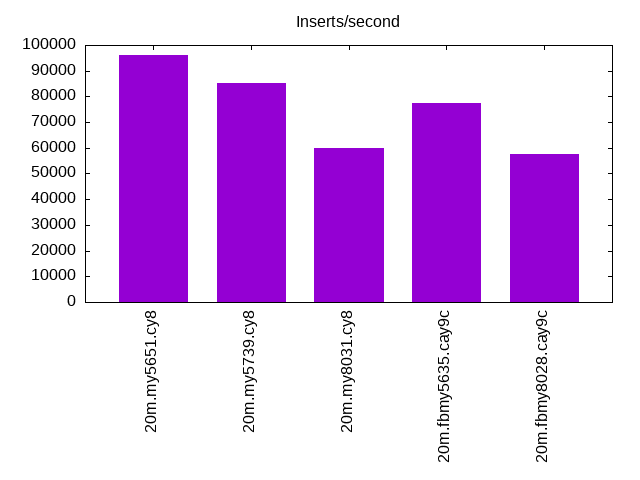
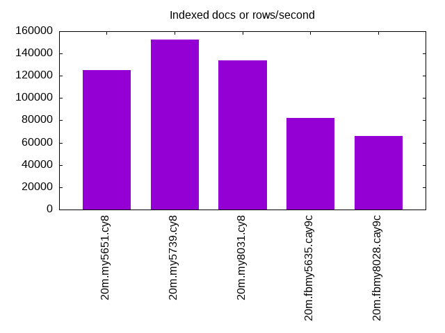
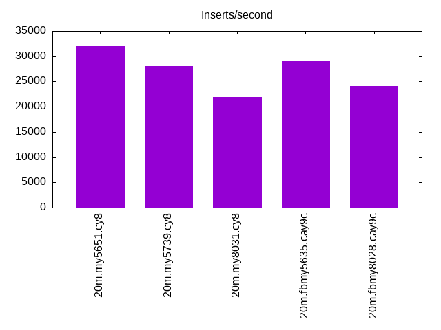
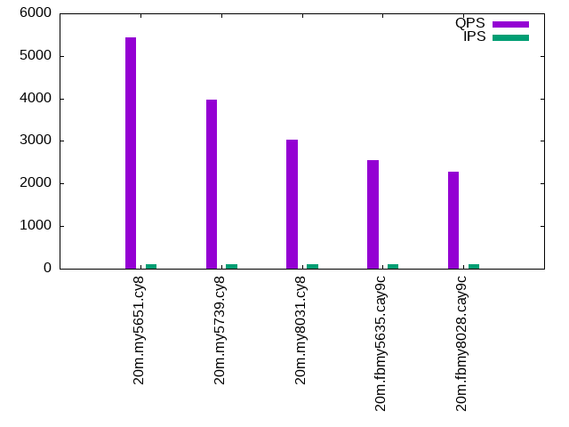
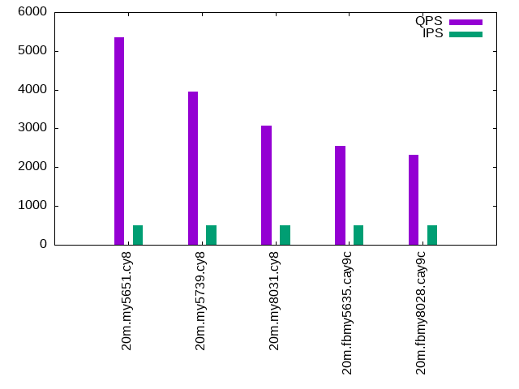
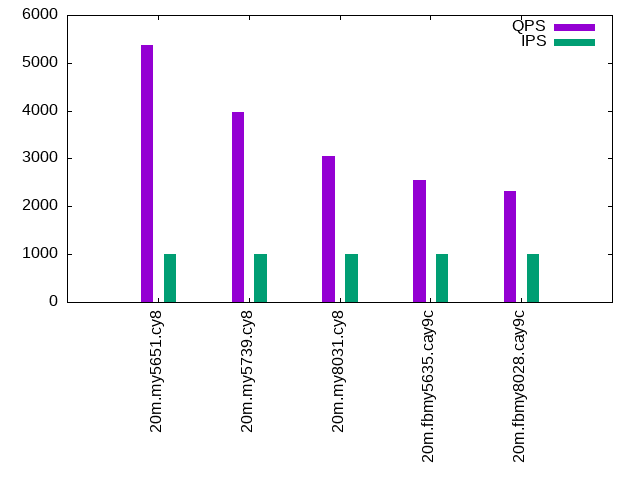

This is a report for the insert benchmark with 20M docs and 1 client(s). It is generated by scripts (bash, awk, sed) and Tufte might not be impressed. An overview of the insert benchmark is here and a short update is here. Below, by DBMS, I mean DBMS+version.config. An example is my8020.c10b40 where my means MySQL, 8020 is version 8.0.20 and c10b40 is the name for the configuration file.
The test server has 8 AMD cores, 16G RAM and an NVMe SSD. It is described here. The benchmark was run with 1 clients and there were 1 or 2 connections per client (1 for queries, 1 for inserts). The benchmark loads 20M rows without secondary indexes, creates secondary indexes, loads another 20M rows then does 3 read+write tests for one hour each that do queries as fast as possible with 100, 500 and then 1000 writes/second/client concurrent with the queries. The database is cached by the storage engine and the only IO is for writes. Clients and the DBMS share one server. The per-database configs are in the per-database subdirectories here.
The tested DBMS are:
The numbers are inserts/s for l.i0 and l.i1, indexed docs (or rows) /s for l.x and queries/s for q*.2. The values are the average rate over the entire test for inserts (IPS) and queries (QPS). The range of values for IPS and QPS is split into 3 parts: bottom 25%, middle 50%, top 25%. Values in the bottom 25% have a red background, values in the top 25% have a green background and values in the middle have no color. A gray background is used for values that can be ignored because the DBMS did not sustain the target insert rate. Red backgrounds are not used when the minimum value is within 80% of the max value.
| dbms | l.i0 | l.x | l.i1 | q100.1 | q500.1 | q1000.1 |
|---|---|---|---|---|---|---|
| 20m.my5651.cy8 | 96154 | 124845 | 32000 | 5438 | 5362 | 5369 |
| 20m.my5739.cy8 | 85106 | 152273 | 28011 | 3965 | 3958 | 3975 |
| 20m.my8031.cy8 | 60060 | 134000 | 21858 | 3024 | 3079 | 3062 |
| 20m.fbmy5635.cay9c | 77519 | 82041 | 29112 | 2557 | 2545 | 2553 |
| 20m.fbmy8028.cay9c | 57471 | 65686 | 24096 | 2282 | 2313 | 2318 |
This lists the average rate of inserts/s for the tests that do inserts concurrent with queries. For such tests the query rate is listed in the table above. The read+write tests are setup so that the insert rate should match the target rate every second. Cells that are not at least 95% of the target have a red background to indicate a failure to satisfy the target.
| dbms | q100.1 | q500.1 | q1000.1 |
|---|---|---|---|
| my5651.cy8 | 100 | 499 | 999 |
| my5739.cy8 | 100 | 499 | 999 |
| my8031.cy8 | 100 | 499 | 999 |
| fbmy5635.cay9c | 100 | 499 | 999 |
| fbmy8028.cay9c | 100 | 499 | 999 |
| target | 100 | 500 | 1000 |
l.i0: load without secondary indexes. Graphs for performance per 1-second interval are here.
Average throughput:
Insert response time histogram: each cell has the percentage of responses that take <= the time in the header and max is the max response time in seconds. For the max column values in the top 25% of the range have a red background and in the bottom 25% of the range have a green background. The red background is not used when the min value is within 80% of the max value.
| dbms | 256us | 1ms | 4ms | 16ms | 64ms | 256ms | 1s | 4s | 16s | gt | max |
|---|---|---|---|---|---|---|---|---|---|---|---|
| my5651.cy8 | 87.213 | 12.536 | 0.245 | 0.003 | 0.003 | 0.112 | |||||
| my5739.cy8 | 1.279 | 98.543 | 0.148 | 0.027 | 0.003 | 0.111 | |||||
| my8031.cy8 | 99.797 | 0.199 | 0.004 | 0.049 | |||||||
| fbmy5635.cay9c | 99.996 | 0.001 | 0.003 | 0.043 | |||||||
| fbmy8028.cay9c | 99.926 | 0.069 | 0.005 | 0.054 |
Performance metrics for the DBMS listed above. Some are normalized by throughput, others are not. Legend for results is here.
ips qps rps rmbps wps wmbps rpq rkbpq wpi wkbpi csps cpups cspq cpupq dbgb1 dbgb2 rss maxop p50 p99 tag 96154 0 844 3.3 93.3 21.9 0.009 0.035 0.001 0.234 11075 22.6 0.115 19 1.3 41.8 2.1 0.112 96890 81808 20m.my5651.cy8 85106 0 0 0.0 166.9 21.7 0.000 0.000 0.002 0.261 8544 21.6 0.100 20 1.3 41.8 2.3 0.111 86005 71220 20m.my5739.cy8 60060 0 0 0.0 357.1 21.8 0.000 0.000 0.006 0.372 7181 21.6 0.120 29 1.3 3.8 2.5 0.049 60331 56137 20m.my8031.cy8 77519 0 0 0.0 63.0 13.1 0.000 0.000 0.001 0.173 7672 22.5 0.099 23 0.7 1.8 0.2 0.043 77912 71120 20m.fbmy5635.cay9c 57471 0 0 0.0 56.5 11.1 0.000 0.000 0.001 0.198 6042 22.7 0.105 32 0.7 1.9 0.6 0.054 57637 53240 20m.fbmy8028.cay9c
l.x: create secondary indexes.
Average throughput:
Performance metrics for the DBMS listed above. Some are normalized by throughput, others are not. Legend for results is here.
ips qps rps rmbps wps wmbps rpq rkbpq wpi wkbpi csps cpups cspq cpupq dbgb1 dbgb2 rss maxop p50 p99 tag 124845 0 13 0.1 1601.9 128.5 0.000 0.000 0.013 1.054 4186 12.5 0.034 8 2.7 43.2 3.5 0.009 NA NA 20m.my5651.cy8 152273 0 0 0.0 1876.9 134.0 0.000 0.000 0.012 0.901 9429 12.6 0.062 7 3.0 43.5 3.7 0.009 NA NA 20m.my5739.cy8 134000 0 714 47.8 2285.3 135.7 0.005 0.365 0.017 1.037 9154 39.9 0.068 24 3.0 5.4 3.9 0.006 NA NA 20m.my8031.cy8 82041 0 0 0.0 57.9 12.5 0.000 0.000 0.001 0.156 331 12.4 0.004 12 1.5 2.5 1.3 0.002 NA NA 20m.fbmy5635.cay9c 65686 0 0 0.0 45.2 10.0 0.000 0.000 0.001 0.156 431 12.6 0.007 15 1.4 2.7 1.9 0.003 NA NA 20m.fbmy8028.cay9c
l.i1: continue load after secondary indexes created. Graphs for performance per 1-second interval are here.
Average throughput:
Insert response time histogram: each cell has the percentage of responses that take <= the time in the header and max is the max response time in seconds. For the max column values in the top 25% of the range have a red background and in the bottom 25% of the range have a green background. The red background is not used when the min value is within 80% of the max value.
| dbms | 256us | 1ms | 4ms | 16ms | 64ms | 256ms | 1s | 4s | 16s | gt | max |
|---|---|---|---|---|---|---|---|---|---|---|---|
| my5651.cy8 | 99.237 | 0.754 | 0.009 | nonzero | 2.118 | ||||||
| my5739.cy8 | 99.409 | 0.504 | 0.086 | 0.001 | 0.085 | ||||||
| my8031.cy8 | 99.321 | 0.508 | 0.168 | 0.002 | 0.085 | ||||||
| fbmy5635.cay9c | 99.996 | 0.002 | 0.003 | 0.042 | |||||||
| fbmy8028.cay9c | 99.958 | 0.037 | 0.005 | 0.001 | 0.127 |
Performance metrics for the DBMS listed above. Some are normalized by throughput, others are not. Legend for results is here.
ips qps rps rmbps wps wmbps rpq rkbpq wpi wkbpi csps cpups cspq cpupq dbgb1 dbgb2 rss maxop p50 p99 tag 32000 0 560 2.2 130.8 20.6 0.018 0.070 0.004 0.661 7557 16.9 0.236 42 7.9 48.4 7.9 2.118 32813 5193 20m.my5651.cy8 28011 0 0 0.0 684.8 34.2 0.000 0.000 0.024 1.249 7576 17.0 0.270 49 7.9 48.4 8.2 0.085 28569 7941 20m.my5739.cy8 21858 0 100 1.6 1988.5 62.9 0.005 0.073 0.091 2.947 11388 17.1 0.521 63 7.9 10.3 8.3 0.085 22475 1548 20m.my8031.cy8 29112 0 9 1.1 159.1 36.2 0.000 0.038 0.005 1.274 6399 30.2 0.220 83 3.0 4.7 2.1 0.042 28917 26120 20m.fbmy5635.cay9c 24096 0 7 0.9 118.3 26.7 0.000 0.038 0.005 1.134 5515 27.9 0.229 93 2.9 4.8 2.6 0.127 23824 21327 20m.fbmy8028.cay9c
q100.1: range queries with 100 insert/s per client. Graphs for performance per 1-second interval are here.
Average throughput:
Query response time histogram: each cell has the percentage of responses that take <= the time in the header and max is the max response time in seconds. For max values in the top 25% of the range have a red background and in the bottom 25% of the range have a green background. The red background is not used when the min value is within 80% of the max value.
| dbms | 256us | 1ms | 4ms | 16ms | 64ms | 256ms | 1s | 4s | 16s | gt | max |
|---|---|---|---|---|---|---|---|---|---|---|---|
| my5651.cy8 | 96.771 | 3.229 | 0.001 | nonzero | nonzero | 0.036 | |||||
| my5739.cy8 | 69.744 | 30.256 | nonzero | nonzero | nonzero | 0.019 | |||||
| my8031.cy8 | 22.161 | 77.839 | nonzero | nonzero | 0.009 | ||||||
| fbmy5635.cay9c | 1.285 | 98.715 | nonzero | nonzero | 0.006 | ||||||
| fbmy8028.cay9c | 0.480 | 99.519 | nonzero | 0.004 |
Insert response time histogram: each cell has the percentage of responses that take <= the time in the header and max is the max response time in seconds. For max values in the top 25% of the range have a red background and in the bottom 25% of the range have a green background. The red background is not used when the min value is within 80% of the max value.
| dbms | 256us | 1ms | 4ms | 16ms | 64ms | 256ms | 1s | 4s | 16s | gt | max |
|---|---|---|---|---|---|---|---|---|---|---|---|
| my5651.cy8 | 74.833 | 24.681 | 0.486 | 0.039 | |||||||
| my5739.cy8 | 99.278 | 0.681 | 0.042 | 0.022 | |||||||
| my8031.cy8 | 99.181 | 0.792 | 0.028 | 0.029 | |||||||
| fbmy5635.cay9c | 100.000 | 0.004 | |||||||||
| fbmy8028.cay9c | 99.889 | 0.111 | 0.015 |
Performance metrics for the DBMS listed above. Some are normalized by throughput, others are not. Legend for results is here.
ips qps rps rmbps wps wmbps rpq rkbpq wpi wkbpi csps cpups cspq cpupq dbgb1 dbgb2 rss maxop p50 p99 tag 100 5438 2 0.0 58.7 1.7 0.000 0.001 0.588 17.547 21147 13.2 3.888 194 8.1 48.6 8.0 0.036 5418 5306 20m.my5651.cy8 100 3965 0 0.0 18.2 0.5 0.000 0.000 0.182 5.086 15414 12.9 3.887 260 8.1 48.6 8.3 0.019 3931 3772 20m.my5739.cy8 100 3024 0 0.0 124.4 3.0 0.000 0.000 1.246 31.023 12385 13.1 4.096 347 8.1 10.5 8.5 0.009 3005 2861 20m.my8031.cy8 100 2557 0 0.0 6.0 0.2 0.000 0.000 0.060 2.045 9957 13.0 3.894 407 2.8 4.6 3.9 0.006 2541 2413 20m.fbmy5635.cay9c 100 2282 0 0.0 3.8 0.2 0.000 0.000 0.038 1.634 9042 13.4 3.962 470 2.8 4.8 4.3 0.004 2237 2046 20m.fbmy8028.cay9c
q500.1: range queries with 500 insert/s per client. Graphs for performance per 1-second interval are here.
Average throughput:
Query response time histogram: each cell has the percentage of responses that take <= the time in the header and max is the max response time in seconds. For max values in the top 25% of the range have a red background and in the bottom 25% of the range have a green background. The red background is not used when the min value is within 80% of the max value.
| dbms | 256us | 1ms | 4ms | 16ms | 64ms | 256ms | 1s | 4s | 16s | gt | max |
|---|---|---|---|---|---|---|---|---|---|---|---|
| my5651.cy8 | 96.426 | 3.572 | 0.001 | nonzero | 0.009 | ||||||
| my5739.cy8 | 69.506 | 30.493 | nonzero | nonzero | nonzero | 0.043 | |||||
| my8031.cy8 | 24.590 | 75.409 | 0.001 | nonzero | nonzero | 0.028 | |||||
| fbmy5635.cay9c | 1.466 | 98.533 | nonzero | 0.003 | |||||||
| fbmy8028.cay9c | 0.448 | 99.551 | nonzero | nonzero | 0.004 |
Insert response time histogram: each cell has the percentage of responses that take <= the time in the header and max is the max response time in seconds. For max values in the top 25% of the range have a red background and in the bottom 25% of the range have a green background. The red background is not used when the min value is within 80% of the max value.
| dbms | 256us | 1ms | 4ms | 16ms | 64ms | 256ms | 1s | 4s | 16s | gt | max |
|---|---|---|---|---|---|---|---|---|---|---|---|
| my5651.cy8 | 90.817 | 9.183 | 0.011 | ||||||||
| my5739.cy8 | 99.539 | 0.444 | 0.017 | 0.054 | |||||||
| my8031.cy8 | 99.456 | 0.483 | 0.061 | 0.035 | |||||||
| fbmy5635.cay9c | 99.981 | 0.019 | 0.006 | ||||||||
| fbmy8028.cay9c | 99.933 | 0.067 | 0.008 |
Performance metrics for the DBMS listed above. Some are normalized by throughput, others are not. Legend for results is here.
ips qps rps rmbps wps wmbps rpq rkbpq wpi wkbpi csps cpups cspq cpupq dbgb1 dbgb2 rss maxop p50 p99 tag 499 5362 9 0.0 9.9 0.6 0.002 0.007 0.020 1.174 20782 13.3 3.876 198 8.7 49.2 8.6 0.009 5338 5241 20m.my5651.cy8 499 3958 0 0.0 20.4 0.8 0.000 0.000 0.041 1.608 15453 13.3 3.904 269 8.7 49.2 8.9 0.043 3931 3771 20m.my5739.cy8 499 3079 0 0.0 234.5 6.1 0.000 0.000 0.470 12.519 12986 13.7 4.217 356 8.7 11.1 9.1 0.028 3053 2893 20m.my8031.cy8 499 2545 0 0.0 6.8 0.5 0.000 0.000 0.014 0.935 9976 13.3 3.919 418 3.0 3.0 4.7 0.003 2525 2397 20m.fbmy5635.cay9c 499 2313 0 0.0 4.8 0.5 0.000 0.000 0.010 0.927 9243 13.8 3.996 477 3.0 3.2 5.0 0.004 2317 2014 20m.fbmy8028.cay9c
q1000.1: range queries with 1000 insert/s per client. Graphs for performance per 1-second interval are here.
Average throughput:
Query response time histogram: each cell has the percentage of responses that take <= the time in the header and max is the max response time in seconds. For max values in the top 25% of the range have a red background and in the bottom 25% of the range have a green background. The red background is not used when the min value is within 80% of the max value.
| dbms | 256us | 1ms | 4ms | 16ms | 64ms | 256ms | 1s | 4s | 16s | gt | max |
|---|---|---|---|---|---|---|---|---|---|---|---|
| my5651.cy8 | 96.352 | 3.647 | 0.001 | nonzero | 0.007 | ||||||
| my5739.cy8 | 70.061 | 29.938 | nonzero | nonzero | 0.016 | ||||||
| my8031.cy8 | 23.516 | 76.483 | 0.001 | nonzero | nonzero | 0.027 | |||||
| fbmy5635.cay9c | 1.443 | 98.556 | 0.001 | 0.003 | |||||||
| fbmy8028.cay9c | 0.543 | 99.456 | 0.001 | nonzero | 0.005 |
Insert response time histogram: each cell has the percentage of responses that take <= the time in the header and max is the max response time in seconds. For max values in the top 25% of the range have a red background and in the bottom 25% of the range have a green background. The red background is not used when the min value is within 80% of the max value.
| dbms | 256us | 1ms | 4ms | 16ms | 64ms | 256ms | 1s | 4s | 16s | gt | max |
|---|---|---|---|---|---|---|---|---|---|---|---|
| my5651.cy8 | 95.492 | 4.508 | 0.010 | ||||||||
| my5739.cy8 | 99.844 | 0.153 | 0.003 | 0.018 | |||||||
| my8031.cy8 | 99.733 | 0.240 | 0.026 | 0.030 | |||||||
| fbmy5635.cay9c | 99.974 | 0.026 | 0.014 | ||||||||
| fbmy8028.cay9c | 99.933 | 0.065 | 0.001 | 0.016 |
Performance metrics for the DBMS listed above. Some are normalized by throughput, others are not. Legend for results is here.
ips qps rps rmbps wps wmbps rpq rkbpq wpi wkbpi csps cpups cspq cpupq dbgb1 dbgb2 rss maxop p50 p99 tag 999 5369 18 0.1 10.0 0.6 0.003 0.013 0.010 0.632 20920 13.3 3.897 198 9.1 49.6 9.0 0.007 5353 5226 20m.my5651.cy8 999 3975 0 0.0 32.9 1.1 0.000 0.000 0.033 1.130 15667 14.1 3.942 284 9.1 49.7 9.3 0.016 3934 3772 20m.my5739.cy8 999 3062 0 0.0 372.8 9.6 0.000 0.000 0.373 9.878 13462 13.9 4.396 363 9.1 11.6 9.5 0.027 3037 2892 20m.my8031.cy8 999 2553 0 0.0 10.3 1.3 0.000 0.000 0.010 1.363 10108 14.3 3.960 448 3.3 3.7 7.0 0.003 2541 2397 20m.fbmy5635.cay9c 999 2318 0 0.0 8.1 1.3 0.000 0.000 0.008 1.284 9350 14.7 4.034 507 3.3 3.9 7.6 0.005 2333 2014 20m.fbmy8028.cay9c
l.i0: load without secondary indexes
Performance metrics for all DBMS, not just the ones listed above. Some are normalized by throughput, others are not. Legend for results is here.
ips qps rps rmbps wps wmbps rpq rkbpq wpi wkbpi csps cpups cspq cpupq dbgb1 dbgb2 rss maxop p50 p99 tag 96154 0 844 3.3 93.3 21.9 0.009 0.035 0.001 0.234 11075 22.6 0.115 19 1.3 41.8 2.1 0.112 96890 81808 20m.my5651.cy8 85106 0 0 0.0 166.9 21.7 0.000 0.000 0.002 0.261 8544 21.6 0.100 20 1.3 41.8 2.3 0.111 86005 71220 20m.my5739.cy8 60060 0 0 0.0 357.1 21.8 0.000 0.000 0.006 0.372 7181 21.6 0.120 29 1.3 3.8 2.5 0.049 60331 56137 20m.my8031.cy8 77519 0 0 0.0 63.0 13.1 0.000 0.000 0.001 0.173 7672 22.5 0.099 23 0.7 1.8 0.2 0.043 77912 71120 20m.fbmy5635.cay9c 57471 0 0 0.0 56.5 11.1 0.000 0.000 0.001 0.198 6042 22.7 0.105 32 0.7 1.9 0.6 0.054 57637 53240 20m.fbmy8028.cay9c
l.x: create secondary indexes
Performance metrics for all DBMS, not just the ones listed above. Some are normalized by throughput, others are not. Legend for results is here.
ips qps rps rmbps wps wmbps rpq rkbpq wpi wkbpi csps cpups cspq cpupq dbgb1 dbgb2 rss maxop p50 p99 tag 124845 0 13 0.1 1601.9 128.5 0.000 0.000 0.013 1.054 4186 12.5 0.034 8 2.7 43.2 3.5 0.009 NA NA 20m.my5651.cy8 152273 0 0 0.0 1876.9 134.0 0.000 0.000 0.012 0.901 9429 12.6 0.062 7 3.0 43.5 3.7 0.009 NA NA 20m.my5739.cy8 134000 0 714 47.8 2285.3 135.7 0.005 0.365 0.017 1.037 9154 39.9 0.068 24 3.0 5.4 3.9 0.006 NA NA 20m.my8031.cy8 82041 0 0 0.0 57.9 12.5 0.000 0.000 0.001 0.156 331 12.4 0.004 12 1.5 2.5 1.3 0.002 NA NA 20m.fbmy5635.cay9c 65686 0 0 0.0 45.2 10.0 0.000 0.000 0.001 0.156 431 12.6 0.007 15 1.4 2.7 1.9 0.003 NA NA 20m.fbmy8028.cay9c
l.i1: continue load after secondary indexes created
Performance metrics for all DBMS, not just the ones listed above. Some are normalized by throughput, others are not. Legend for results is here.
ips qps rps rmbps wps wmbps rpq rkbpq wpi wkbpi csps cpups cspq cpupq dbgb1 dbgb2 rss maxop p50 p99 tag 32000 0 560 2.2 130.8 20.6 0.018 0.070 0.004 0.661 7557 16.9 0.236 42 7.9 48.4 7.9 2.118 32813 5193 20m.my5651.cy8 28011 0 0 0.0 684.8 34.2 0.000 0.000 0.024 1.249 7576 17.0 0.270 49 7.9 48.4 8.2 0.085 28569 7941 20m.my5739.cy8 21858 0 100 1.6 1988.5 62.9 0.005 0.073 0.091 2.947 11388 17.1 0.521 63 7.9 10.3 8.3 0.085 22475 1548 20m.my8031.cy8 29112 0 9 1.1 159.1 36.2 0.000 0.038 0.005 1.274 6399 30.2 0.220 83 3.0 4.7 2.1 0.042 28917 26120 20m.fbmy5635.cay9c 24096 0 7 0.9 118.3 26.7 0.000 0.038 0.005 1.134 5515 27.9 0.229 93 2.9 4.8 2.6 0.127 23824 21327 20m.fbmy8028.cay9c
q100.1: range queries with 100 insert/s per client
Performance metrics for all DBMS, not just the ones listed above. Some are normalized by throughput, others are not. Legend for results is here.
ips qps rps rmbps wps wmbps rpq rkbpq wpi wkbpi csps cpups cspq cpupq dbgb1 dbgb2 rss maxop p50 p99 tag 100 5438 2 0.0 58.7 1.7 0.000 0.001 0.588 17.547 21147 13.2 3.888 194 8.1 48.6 8.0 0.036 5418 5306 20m.my5651.cy8 100 3965 0 0.0 18.2 0.5 0.000 0.000 0.182 5.086 15414 12.9 3.887 260 8.1 48.6 8.3 0.019 3931 3772 20m.my5739.cy8 100 3024 0 0.0 124.4 3.0 0.000 0.000 1.246 31.023 12385 13.1 4.096 347 8.1 10.5 8.5 0.009 3005 2861 20m.my8031.cy8 100 2557 0 0.0 6.0 0.2 0.000 0.000 0.060 2.045 9957 13.0 3.894 407 2.8 4.6 3.9 0.006 2541 2413 20m.fbmy5635.cay9c 100 2282 0 0.0 3.8 0.2 0.000 0.000 0.038 1.634 9042 13.4 3.962 470 2.8 4.8 4.3 0.004 2237 2046 20m.fbmy8028.cay9c
q500.1: range queries with 500 insert/s per client
Performance metrics for all DBMS, not just the ones listed above. Some are normalized by throughput, others are not. Legend for results is here.
ips qps rps rmbps wps wmbps rpq rkbpq wpi wkbpi csps cpups cspq cpupq dbgb1 dbgb2 rss maxop p50 p99 tag 499 5362 9 0.0 9.9 0.6 0.002 0.007 0.020 1.174 20782 13.3 3.876 198 8.7 49.2 8.6 0.009 5338 5241 20m.my5651.cy8 499 3958 0 0.0 20.4 0.8 0.000 0.000 0.041 1.608 15453 13.3 3.904 269 8.7 49.2 8.9 0.043 3931 3771 20m.my5739.cy8 499 3079 0 0.0 234.5 6.1 0.000 0.000 0.470 12.519 12986 13.7 4.217 356 8.7 11.1 9.1 0.028 3053 2893 20m.my8031.cy8 499 2545 0 0.0 6.8 0.5 0.000 0.000 0.014 0.935 9976 13.3 3.919 418 3.0 3.0 4.7 0.003 2525 2397 20m.fbmy5635.cay9c 499 2313 0 0.0 4.8 0.5 0.000 0.000 0.010 0.927 9243 13.8 3.996 477 3.0 3.2 5.0 0.004 2317 2014 20m.fbmy8028.cay9c
q1000.1: range queries with 1000 insert/s per client
Performance metrics for all DBMS, not just the ones listed above. Some are normalized by throughput, others are not. Legend for results is here.
ips qps rps rmbps wps wmbps rpq rkbpq wpi wkbpi csps cpups cspq cpupq dbgb1 dbgb2 rss maxop p50 p99 tag 999 5369 18 0.1 10.0 0.6 0.003 0.013 0.010 0.632 20920 13.3 3.897 198 9.1 49.6 9.0 0.007 5353 5226 20m.my5651.cy8 999 3975 0 0.0 32.9 1.1 0.000 0.000 0.033 1.130 15667 14.1 3.942 284 9.1 49.7 9.3 0.016 3934 3772 20m.my5739.cy8 999 3062 0 0.0 372.8 9.6 0.000 0.000 0.373 9.878 13462 13.9 4.396 363 9.1 11.6 9.5 0.027 3037 2892 20m.my8031.cy8 999 2553 0 0.0 10.3 1.3 0.000 0.000 0.010 1.363 10108 14.3 3.960 448 3.3 3.7 7.0 0.003 2541 2397 20m.fbmy5635.cay9c 999 2318 0 0.0 8.1 1.3 0.000 0.000 0.008 1.284 9350 14.7 4.034 507 3.3 3.9 7.6 0.005 2333 2014 20m.fbmy8028.cay9c
Insert response time histogram
256us 1ms 4ms 16ms 64ms 256ms 1s 4s 16s gt max tag 0.000 87.213 12.536 0.245 0.003 0.003 0.000 0.000 0.000 0.000 0.112 my5651.cy8 0.000 1.279 98.543 0.148 0.027 0.003 0.000 0.000 0.000 0.000 0.111 my5739.cy8 0.000 0.000 99.797 0.199 0.004 0.000 0.000 0.000 0.000 0.000 0.049 my8031.cy8 0.000 0.000 99.996 0.001 0.003 0.000 0.000 0.000 0.000 0.000 0.043 fbmy5635.cay9c 0.000 0.000 99.926 0.069 0.005 0.000 0.000 0.000 0.000 0.000 0.054 fbmy8028.cay9c
TODO - determine whether there is data for create index response time
Insert response time histogram
256us 1ms 4ms 16ms 64ms 256ms 1s 4s 16s gt max tag 0.000 0.000 99.237 0.754 0.009 0.000 0.000 nonzero 0.000 0.000 2.118 my5651.cy8 0.000 0.000 99.409 0.504 0.086 0.001 0.000 0.000 0.000 0.000 0.085 my5739.cy8 0.000 0.000 99.321 0.508 0.168 0.002 0.000 0.000 0.000 0.000 0.085 my8031.cy8 0.000 0.000 99.996 0.002 0.003 0.000 0.000 0.000 0.000 0.000 0.042 fbmy5635.cay9c 0.000 0.000 99.958 0.037 0.005 0.001 0.000 0.000 0.000 0.000 0.127 fbmy8028.cay9c
Query response time histogram
256us 1ms 4ms 16ms 64ms 256ms 1s 4s 16s gt max tag 96.771 3.229 0.001 nonzero nonzero 0.000 0.000 0.000 0.000 0.000 0.036 my5651.cy8 69.744 30.256 nonzero nonzero nonzero 0.000 0.000 0.000 0.000 0.000 0.019 my5739.cy8 22.161 77.839 nonzero nonzero 0.000 0.000 0.000 0.000 0.000 0.000 0.009 my8031.cy8 1.285 98.715 nonzero nonzero 0.000 0.000 0.000 0.000 0.000 0.000 0.006 fbmy5635.cay9c 0.480 99.519 nonzero 0.000 0.000 0.000 0.000 0.000 0.000 0.000 0.004 fbmy8028.cay9c
Insert response time histogram
256us 1ms 4ms 16ms 64ms 256ms 1s 4s 16s gt max tag 0.000 0.000 74.833 24.681 0.486 0.000 0.000 0.000 0.000 0.000 0.039 my5651.cy8 0.000 0.000 99.278 0.681 0.042 0.000 0.000 0.000 0.000 0.000 0.022 my5739.cy8 0.000 0.000 99.181 0.792 0.028 0.000 0.000 0.000 0.000 0.000 0.029 my8031.cy8 0.000 0.000 100.000 0.000 0.000 0.000 0.000 0.000 0.000 0.000 0.004 fbmy5635.cay9c 0.000 0.000 99.889 0.111 0.000 0.000 0.000 0.000 0.000 0.000 0.015 fbmy8028.cay9c
Query response time histogram
256us 1ms 4ms 16ms 64ms 256ms 1s 4s 16s gt max tag 96.426 3.572 0.001 nonzero 0.000 0.000 0.000 0.000 0.000 0.000 0.009 my5651.cy8 69.506 30.493 nonzero nonzero nonzero 0.000 0.000 0.000 0.000 0.000 0.043 my5739.cy8 24.590 75.409 0.001 nonzero nonzero 0.000 0.000 0.000 0.000 0.000 0.028 my8031.cy8 1.466 98.533 nonzero 0.000 0.000 0.000 0.000 0.000 0.000 0.000 0.003 fbmy5635.cay9c 0.448 99.551 nonzero nonzero 0.000 0.000 0.000 0.000 0.000 0.000 0.004 fbmy8028.cay9c
Insert response time histogram
256us 1ms 4ms 16ms 64ms 256ms 1s 4s 16s gt max tag 0.000 0.000 90.817 9.183 0.000 0.000 0.000 0.000 0.000 0.000 0.011 my5651.cy8 0.000 0.000 99.539 0.444 0.017 0.000 0.000 0.000 0.000 0.000 0.054 my5739.cy8 0.000 0.000 99.456 0.483 0.061 0.000 0.000 0.000 0.000 0.000 0.035 my8031.cy8 0.000 0.000 99.981 0.019 0.000 0.000 0.000 0.000 0.000 0.000 0.006 fbmy5635.cay9c 0.000 0.000 99.933 0.067 0.000 0.000 0.000 0.000 0.000 0.000 0.008 fbmy8028.cay9c
Query response time histogram
256us 1ms 4ms 16ms 64ms 256ms 1s 4s 16s gt max tag 96.352 3.647 0.001 nonzero 0.000 0.000 0.000 0.000 0.000 0.000 0.007 my5651.cy8 70.061 29.938 nonzero nonzero 0.000 0.000 0.000 0.000 0.000 0.000 0.016 my5739.cy8 23.516 76.483 0.001 nonzero nonzero 0.000 0.000 0.000 0.000 0.000 0.027 my8031.cy8 1.443 98.556 0.001 0.000 0.000 0.000 0.000 0.000 0.000 0.000 0.003 fbmy5635.cay9c 0.543 99.456 0.001 nonzero 0.000 0.000 0.000 0.000 0.000 0.000 0.005 fbmy8028.cay9c
Insert response time histogram
256us 1ms 4ms 16ms 64ms 256ms 1s 4s 16s gt max tag 0.000 0.000 95.492 4.508 0.000 0.000 0.000 0.000 0.000 0.000 0.010 my5651.cy8 0.000 0.000 99.844 0.153 0.003 0.000 0.000 0.000 0.000 0.000 0.018 my5739.cy8 0.000 0.000 99.733 0.240 0.026 0.000 0.000 0.000 0.000 0.000 0.030 my8031.cy8 0.000 0.000 99.974 0.026 0.000 0.000 0.000 0.000 0.000 0.000 0.014 fbmy5635.cay9c 0.000 0.000 99.933 0.065 0.001 0.000 0.000 0.000 0.000 0.000 0.016 fbmy8028.cay9c